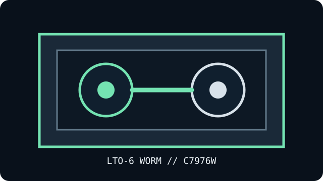

[ REMOVABLE TAPE // MODEL-SPECIFIC WORM MEDIA ]
HPE LTO-6 Ultrium 2.5 TB WORM Data Cartridge (C7976W)
Model-specific, write-once-read-many half-inch LTO Ultrium media. This page describes the cartridge only; drive, host interface, software and backup workflow are separate equipment.

MEDIA ONLY: HPE LTO-6 Ultrium 2.5 TB WORM Data Cartridge (C7976W). WORM media is designed to prevent recorded data from being overwritten or erased; it is not a substitute for independent verified copies. Host connectivity and recording operations belong to a supported tape drive and software.
Format generation, capacity and drive compatibility
| Manufacturer / exact model | Hewlett Packard Enterprise; C7976W |
|---|---|
| Format generation | LTO Ultrium 6, half-inch magnetic tape cartridge; WORM (Write Once, Read Many). |
| Native capacity | 2.5 TB (uncompressed). |
| Compressed capacity | Nominal 6.25 TB at an assumed 2.5:1 ratio; actual compression depends on data, drive and software and may be lower or absent. |
| Drive compatibility | Use in an LTO Ultrium 6 drive that explicitly supports WORM media. Check the exact drive manufacturer’s media-generation matrix and firmware; drive generations support earlier cartridges only as specified by that matrix. Physical fit is not proof of read/write compatibility. |
| Interface | The cartridge has no host connector. A compatible tape drive supplies SAS, Fibre Channel or another drive-specific interface; confirm the drive, HBA, cable, firmware, library and software chain as a whole. |
| Write behavior | WORM prevents overwriting or erasing recorded data. A supported drive/software combination may append data as permitted by the WORM format; follow the exact drive and application procedures. |
Handling, storage limits and preservation
HPE LTO cartridge guidance lists 16–32 °C (61–90 °F) and 20–80% relative humidity for storage conditions; for long-term archival storage it lists 5–23 °C (41–73 °F), 20–50% relative humidity, and a 26 °C (78 °F) maximum wet-bulb temperature. Keep conditions non-condensing and verify the exact generation-specific media guidance, especially for FUJIFILM media. Keep the cartridge in its case in a clean, dry place away from dust, direct sunlight, magnetic fields and contaminants. Keep it packaged during temperature/humidity transitions until acclimated to the drive-room environment, following the exact drive manual for required acclimation time.
- Handle by the case; do not touch exposed tape or cartridge openings. Never drop, crush, open or remove a cartridge while the drive is active.
- Retain the label and case. Record model, generation, lot, recording date, drive/firmware and environmental history; protect the barcode against abrasion.
- Maintain checksums and independent copies, periodically test reads/restores, and migrate before compatible drives, interfaces or expertise disappear. WORM status alone does not guarantee long-term readability.
Sources and standards
- HPE / HPE — LTO Ultrium 6 WORM data cartridge C7976WManufacturer generation/model reference; verify the cartridge label and native capacity before use.
- HPE PartSurfer — exact part-number record for C7976WManufacturer product catalog or exact part-number lookup for model identification.
- LTO Program — generation compatibilityFormat-family compatibility overview; the particular drive manufacturer's matrix determines exact read/write support.
- HPE — LTO Ultrium cartridge storage and handling conditionsManufacturer technical reference for controlled storage and media handling; consult the applicable generation-specific drive guide.
Capacity distinguishes native from assumed compressed capacity. Compatibility is drive-specific; do not infer it from the format label alone.